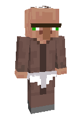

01 / КАТАЛОГ↗
Моды, шейдеры,
ресурспаки
Огромная библиотека дополнений — выбирай, устанавливай и запускай без лишних шагов.
Всё для Minecraft в одном месте. Собирай идеальную игру, меняй стиль и открывай новые скорости.

Всё, что нужно для нового опыта.
Прямо внутри лаунчера.
Огромная библиотека дополнений — выбирай, устанавливай и запускай без лишних шагов.
Подборки и сборки, которые помогают начать приключение без долгой настройки.
MODRINTH INSIDEПодбирай скины и меняй настроение персонажа. Пусть каждый вход в игру будет по-твоему.
Открыть лаунчер ↗
Мы добавили Rust Edition — отдельную, лёгкую реализацию для тех, кто хочет выжать больше из каждой секунды игры.
Razor Launcher — всё для твоей игры в одном месте.
Скачать установщик ↓Windows 10/11 x64 · Установщик · 118 МБPortable-версия без установки · 107 МБ